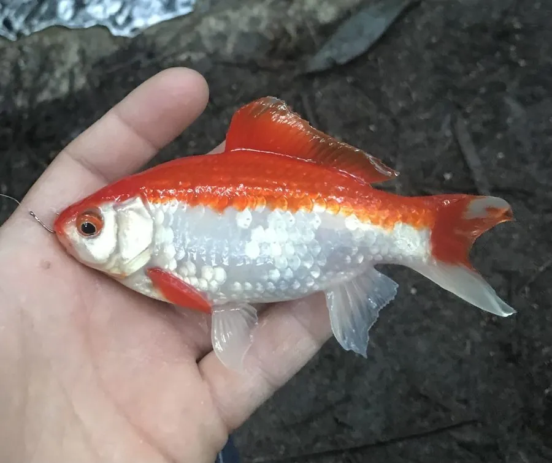

鱼类 · 动物界
金鱼 Carassius auratus

由野生鲫鱼经千年人工选育而成的观赏鱼，品种多达数百个，是中国贡献给世界的最古老观赏鱼之一。
- 分类
- 门脊索动物门纲硬骨鱼纲目鲤形目科鲤科属鲫属
- 栖息环境
- 人工池塘、水族箱等静水环境，野外化种群见于缓流池塘与沟渠
- 地理分布
- 全球广泛人工饲养，源自中国，野生化种群见于多地
- 保护级别
- 暂无评估；中国未列入国家重点保护野生动物名录（人工培育品种）
物种志
金鱼是野生鲫鱼的驯化变种，体形、体色和鳍形的变异极大：草种体形接近鲫鱼，文种体短而圆、尾鳍分叉，蛋种无背鳍、体呈卵形，龙种眼球外凸，水泡眼的眼睛下方还长着充满液体的液泡。体色有红、橙、白、黑、紫和花斑等，成鱼体长一般 10–20 cm，大型品种可超过 30 cm。
中国自晋代就有红色鲫鱼的记载，唐代开始在放生池中人工饲养，宋代出现家养金鱼，明代培育出双尾、龙睛等品种，此后陆续传入日本、欧洲和美洲。金鱼是杂食性鱼类，以浮游动物、藻类、水生昆虫和人工饵料为食；繁殖期多在春季和秋季，雌鱼把卵产在水草上，每尾可产数千至数万粒，亲鱼不护卵。如今金鱼已在全球广泛饲养，野生化种群也见于多地池塘，作为人工培育品种，它没有IUCN 的评估，中国也未将其列入国家重点保护野生动物名录。
形态与习性
- 食性杂食性，取食浮游动物、藻类、水生昆虫和人工饵料
- 体长常见 10–20 cm，大型品种可超过 30 cm
- 寿命一般 5–10 年，精心饲养可活 20 年以上
- 繁殖春秋季产卵，每尾雌鱼可产数千至数万粒卵
- 品种现存品种数以百计，分草种、文种、蛋种、龙种四大类
- 起源由野生鲫鱼驯化而来，宋代已出现家养金鱼
趣味知识
- 金鱼与野生鲫鱼是同一个物种，只是经过长期人工选育，外形差异巨大。
- 金鱼没有胃，靠肠道消化食物，因此需要少量多次投喂。
- 1500 多年前中国就有红鲫鱼的记载，金鱼是最早被驯化的观赏鱼之一。